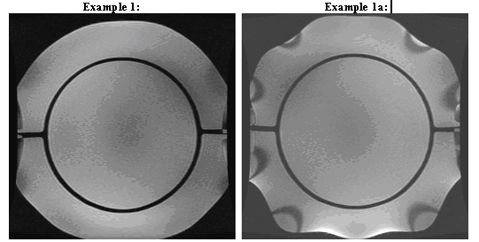
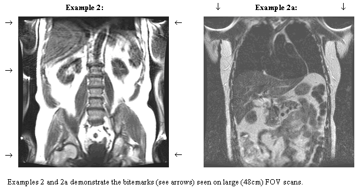
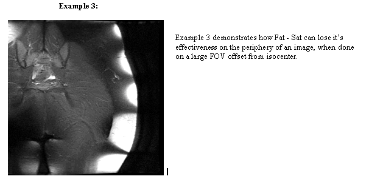

Bite Marks (Common Symptoms: FAT SAT or Shim)


|
Effectivity Symptom The images in Example 1 and 1a are both Coronal images of the LVshim phantom at a 48cm FOV with identical scan parameters (including Fat-Sat) .Example 1a is the Active Shield magnet and its image displays the bitemarks on the edges of the phantom. (Both images also have wrap-around, left and right.) Common characteristics for this type of artifact: � Can
occur on Active Shield Magnets (S4, S5, SX, SXC_1, SXC_2). What Can Service Do to Correct This: Refer to the Geometric Distortion Troubleshooting Flowchart for ideas. Nothing will really make this go away. Make sure that the magnet is shimmed to spec. and any in-bore passive shimming is based on the 45cm DSV mechanical plot. All S4 magnets with a serial number less than G185 where originally shimmed on the cylindrical C6 plot. There can be a reduction in the penetration of the bitemarks, by re-doing the passive shims, if they are still based on the C6 plots. There is no other solution, other than reduction of the field of view. |
